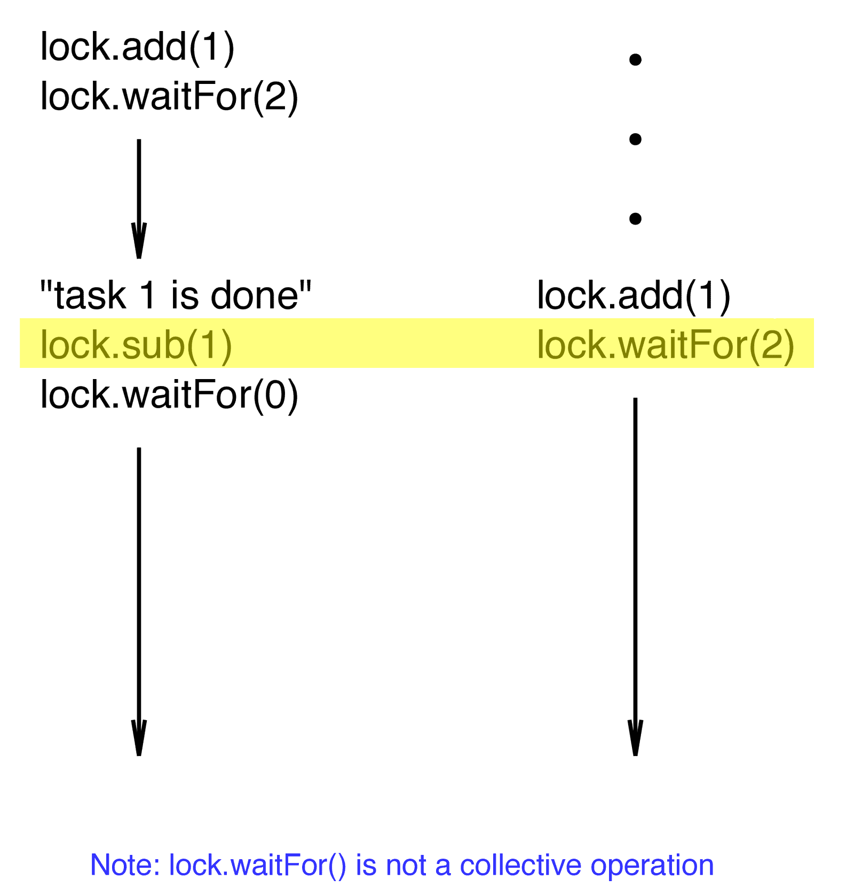

Synchronization of tasks
sync block
The keyword sync provides all sorts of mechanisms to synchronize tasks in Chapel. We can simply use sync to force the parent task to stop and wait until its spawned child-task ends. Consider this sync1.chpl:
var x = 0;
writeln('This is the main task starting a synchronous task');
sync {
begin {
var count = 0;
while count < 10 {
count += 1;
writeln('task 1: ', x + count);
}
}
}
writeln('The first task is done ...');
writeln('This is the main task starting an asynchronous task');
begin {
var count = 0;
while count < 10 {
count += 1;
writeln('task 2: ', x + count);
}
}
writeln('This is the main task, I am done ...');$ chpl sync1.chpl -o sync1
$ sed -i -e 's|gmax|sync1|' shared.sh
$ sbatch shared.sh
$ cat solution.outThis is the main task starting a synchronous task
task 1: 1
task 1: 2
task 1: 3
task 1: 4
task 1: 5
task 1: 6
task 1: 7
task 1: 8
task 1: 9
task 1: 10
The first task is done ...
This is the main task starting an asynchronous task
This is the main task, I am done ...
task 2: 1
task 2: 2
task 2: 3
task 2: 4
task 2: 5
task 2: 6
task 2: 7
task 2: 8
task 2: 9
task 2: 10What would happen if we swap sync and begin in the first task:
begin {
sync {
var c = 0;
while c < 10 {
c += 1;
writeln('task 1: ', x + c);
}
}
}
writeln('The first task is done ...');Discuss your observations.
Use begin and sync statements to reproduce the functionality of cobegin in cobegin.chpl, i.e., the main task should not continue until both tasks 1 and 2 are completed.
sync variables
A more elaborated and powerful use of sync is as a type qualifier for variables. When a variable is declared as sync, a state that can be full or empty is associated with it.
To assign a new value to a sync variable, its state must be empty (after the assignment operation is completed, the state will be set as full). On the contrary, to read a value from a sync variable, its state must be full (after the read operation is completed, the state will be set as empty again).
var x: sync int;
writeln('this is the main task launching a new task');
begin {
for i in 1..10 do
writeln('this is the new task working: ', i);
x.writeEF(2); // write the value, state changes from Empty to Full
writeln('New task finished');
}
writeln('this is the main task after launching new task ... I will wait until x is full');
x.readFE(); // read the value, state changes from Full to Empty
writeln('and now it is done');$ chpl sync2.chpl -o sync2
$ sed -i -e 's|sync1|sync2|' shared.sh
$ sbatch shared.sh
$ cat solution.outthis is main task launching a new task
this is main task after launching new task ... I will wait until x is full
this is new task working: 1
this is new task working: 2
this is new task working: 3
this is new task working: 4
this is new task working: 5
this is new task working: 6
this is new task working: 7
this is new task working: 8
this is new task working: 9
this is new task working: 10
New task finished
and now it is doneHere the main task does not continue until the variable is full and can be read.
- Let’s add another line
x.readFE();– now it is stuck since we cannot readxwhile it’s empty! - Let’s add
x.writeEF(5);right before the lastx.readFE();– now we set is to full again (and assigned 5), and it can be read again.
There are a number of methods defined for sync variables. Suppose x is a sync variable of a given type:
// general methods
x.reset() - set the state as empty and the value as the default of x's type
x.isfull() - return true is the state of x is full, false if it is empty
// blocking read and write methods
x.writeEF(value) - block until the state of x is empty, then assign the value and
set the state to full
x.writeFF(value) - block until the state of x is full, then assign the value and
leave the state as full
x.readFE() - block until the state of x is full, then return x's value and set
the state to empty
x.readFF() - block until the state of x is full, then return x's value and
leave the state as full
// non-blocking read and write methods
x.writeXF(value) - assign the value no matter the state of x, then set the state as full
x.readXX() - return the value of x regardless its state; the state will remain unchangedAtomic variables
Chapel also implements atomic operations with variables declared as atomic, and this provides another option to synchronize tasks. Atomic operations run completely independently of any other task or process. This means that when several tasks try to write an atomic variable, only one will succeed at a given moment, providing implicit synchronization between them. There is a number of methods defined for atomic variables, among them sub(), add(), write(), read(), and waitfor() are very useful to establish explicit synchronization between tasks, as shown in the next code atomic.chpl:
var lock: atomic int;
const numtasks = 5;
lock.write(0); // the main task set lock to zero
coforall id in 1..numtasks {
writeln('greetings form task ', id, '... I am waiting for all tasks to say hello');
lock.add(1); // task id says hello and atomically adds 1 to lock
lock.waitFor(numtasks); // then it waits for lock to be equal numtasks (which will happen when all tasks say hello)
writeln('task ', id, ' is done ...');
}$ chpl atomic.chpl -o atomic
$ sed -i -e 's|sync2|atomic|' shared.sh
$ sbatch shared.sh
$ cat solution.outgreetings form task 4... I am waiting for all tasks to say hello
greetings form task 5... I am waiting for all tasks to say hello
greetings form task 2... I am waiting for all tasks to say hello
greetings form task 3... I am waiting for all tasks to say hello
greetings form task 1... I am waiting for all tasks to say hello
task 1 is done...
task 5 is done...
task 2 is done...
task 3 is done...
task 4 is done...Comment out the line
lock.waitfor(numtasks)in the code above to clearly observe the effect of task synchronization. {.note}
Suppose we want to add another synchronization point right after the last writeln() command. What is wrong with adding the following at the end of the coforall loop?
lock.sub(1); // task id says hello and atomically subtracts 1 from lock
lock.waitFor(0); // then it waits for lock to be equal 0 (which will happen when all tasks say hello)
writeln('task ', id, ' is really done ...');
Ok, then what is the solution if we want two synchronization points?
Finally, with everything learned so far, we should be ready to parallelize our code for the simulation of the heat transfer equation.